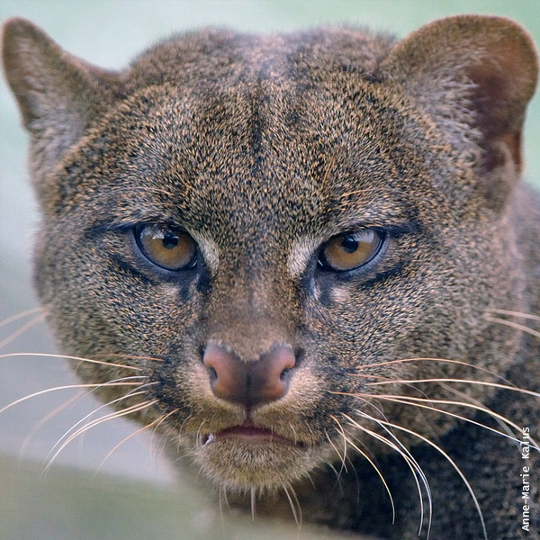

Yaguarundi
- Nombre científico: Herpailurus yagouaroundi
- Mide entre 43 a 83 cm
- Su peso va de los 3 a 9 kg
Normalmente el yaguarundí es solitario, aunque con frecuencia se lo suele ver en parejas. Es de hábitos principalmente diurnos con picos de actividad por la mañana y tarde (esto contribuyó por mucho tiempo a la falsa suposición de que era común y abundante). Si bien es terrestre puede trepar con agilidad a los árboles, especialmente cuando se ve amenazado. La dieta del Yaguarundí incluye mamíferos pequeños y medianos, aves, reptiles y en menor proporción peces, insectos y frutos. Aunque por lo general cazan presas de pequeño tamaño que no superan 1 kg de peso, se sabe que pueden atacar presas relativamente grandes para él como zarigüeyas y armadillos.
El pelaje es corto y uniforme sin manchas. En Argentina presenta dos fases de coloración, una pardo rojiza y otra gris oscura o negra. Ambas fases pueden aparecer simultáneamente en una misma población e incluso en una misma camada. Generalmente en bosques húmedos sería más frecuente la variante oscura, mientras que ambientes secos y abiertos predominan las variantes más claras.